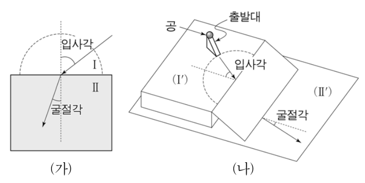

물리교육론 객관식 4문항 — 2009 개정 물리 과목·차원 분석·빛의 입자 모형·발생 학습2009 curriculum (Physics I/II) · dimensional analysis · corpuscular model of refraction · generative learning
2012학년도 중등교사 임용시험 물리 1차(객관식) 5~8번 — 물리교육론 문항 묶음. 각 문항에서 알맞은 답을 고르시오.
- 효율 = (얻은 일) ÷ (넣은 에너지) — 같은 단위끼리 나누므로 단위가 없는 수.
- 빛이 공기에서 물로 들어가면 법선 쪽으로 꺾인다. 실제로 물속의 빛은 공기보다 느리다.
- 역학적 에너지 보존: 높이가 낮아진 만큼 퍼텐셜 에너지가 운동 에너지로 바뀐다.
다음은 2009 개정 과학과 교육과정이 적용된 과목의 수업을 준비하는 고등학교 교사 2명의 대화 내용이다.
교사 A: ㉠과목 집중 이수 취지에 따라 우리 학교에서는 2012학년도 1학기 때는 「물리Ⅰ」을 개설하고, 2학기 때는 「물리Ⅱ」를 개설해요.
교사 B: 「물리Ⅰ」의 내용을 보니까, 고등학교 「과학」의 내용과 중복되는 것이 여러 부분에서 발견되더라고요. ㉡고등학교 「과학」에 있는 에너지띠 이론과 반도체의 내용이 「물리Ⅰ」에 또 나와요.
교사 A: 내용의 수준은 좀 다르지만, 초전도체 내용도 또 나오죠. ㉢「물리Ⅰ」에서는 마이스너 효과를 이용한 실험까지 제시하고 있어요.
교사 B: 그런데 교육과정의 적용 시기가 달라서 학생들의 입학년도에 따라 중학교 과정에서 배운 내용에 차이가 생긴다는 것 아세요?
교사 A: 네. ㉣2012년에 고등학교에 입학하는 학생들은 중학교 때 전류의 자기 작용에 대해서 학습하지 않았기 때문에 고등학교 「과학」을 가르칠 때 좀 더 신경을 써야 하죠.
교사 B: 그리고 이번 2009 개정 과학과 교육과정의 「물리Ⅰ」, 「물리Ⅱ」의 특징 중 하나가 첨단 과학 기술에 대한 이해를 중요하게 다루는 것이라고 하네요.
교사 A: 그렇죠. ㉤「물리Ⅱ」에서 주사투과현미경(STM)을 도입한 것이 첨단 과학 기술을 소개한 전형적인 예라고 볼 수 있죠.
교사의 대화 내용 ㉠~㉤ 중에서 옳지 않은 것은? [1.5점]
- 2009 개정 교육과정 총론의 ‘과목 집중 이수제’와 물리Ⅰ·Ⅱ의 첨단 과학 기술 내용(반도체, 초전도, STM)을 떠올리자.
- 전류의 자기 작용은 중학교 과학에서 다루지 않는 내용일까?
다음은 현직 교사와 실습 중인 예비 교사가 물리적 차원에 대한 오개념에 관해 나눈 대화이다.
예비 교사: 선생님, 오늘은 에너지 단원을 수업했습니다. 그런데 수업을 하다 보니, 학생들이 에너지 ‘효율(efficiency)’이 무차원(dimensionless)이라는 것을 모르고 있었습니다. 심지어 효율의 물리적 차원이 퍼센트(%)라고 생각하고 있는 학생도 있었습니다.
현직 교사: 네. 그렇습니다. 물리학에서 ㉠‘효율’이란 에너지 전환 효율을 의미하는 것으로서 입력된 에너지와 전환된 일 사이의 비율입니다. 따라서 효율은 무차원입니다.
예비 교사: 그렇군요. 그래서 물리 문제를 풀 때 물리량들의 차원을 따져보는 것은 정말 중요합니다.
현직 교사: 그것이 ㉡차원 분석(dimensional analysis)입니다. 그러나 차원 분석을 할 때 주의할 것이 있습니다. 예를 들어 ( ㉢ )은 서로 다른 물리량이지만 같은 차원으로 표현되는 경우가 있습니다.
이에 대한 설명으로 옳은 것만을 <보기>에서 있는 대로 고른 것은?
- ㄱ. 이상적인 열기관의 경우, ㉠은 온도의 비로 표시될 수 있다.
- ㄴ. 물리 문제에서 ㉡을 수행할 때는 단위들을 국제표준단위계(SI units)로 통일할 필요가 없다.
- ㄷ. ㉢의 예로는 ‘돌림힘(torque)과 일’이 있다.
- 카르노 기관의 효율 \(\eta=1-T_C/T_H\).
- 차원 분석은 [M], [L], [T]의 지수를 맞추는 것 — 어떤 단위계든 같다.
- 돌림힘 r×F와 일 F·s의 단위는?
그림 (가)와 같이 빛이 공기(Ⅰ)에서 물(Ⅱ)로 들어갈 때 굴절하는 현상을 설명하기 위해 그림 (나)와 같은 입자 모형을 사용하려고 한다. 이때 상대 굴절률은 \(\dfrac{\sin(\text{입사각})}{\sin(\text{굴절각})}\)이다.

모형 (나)에 대한 설명으로 옳은 것만을 <보기>에서 있는 대로 고른 것은?
- ㄱ. 빛이 공기에서 물로 들어갈 때 반사와 굴절이 동시에 일어난다는 사실을 설명할 수 없는 한계점을 갖는다.
- ㄴ. 물속에서의 빛의 속력이 공기 중에서의 빛의 속력보다 작다는 것을 설명할 수 있다.
- ㄷ. 상대 굴절률이 입사각과 관계없이 일정함을 보이기 위해서 입사각을 변화시키면서 실험을 할 때, 출발대에서 공을 출발시키는 높이를 같게 유지해야 한다.
- 공이 경사면을 내려가면 속력은 커지는가, 작아지는가? 어느 방향 성분만 바뀌는가?
- 공 하나가 반사와 굴절을 동시에 할 수 있는가?
- sin i / sin r = v₂/v₁ 이 일정하려면 v₁이 일정해야 한다.
다음은 발생 학습(generative learning) 모형을 적용한 ‘역학적 에너지의 전환과 보존’ 수업 계획이다.
단계 (가): 물체가 운동할 때, 운동 에너지와 퍼텐셜 에너지의 관계에 대한 학생들의 개념을 파악한다.
단계 (나): 학생들에게 간이 롤러코스터를 만들어 공을 굴려 떨어뜨리면서 구간별로 높이와 속력을 측정하는 실험을 제시한다. 이때 학생들에게 퍼텐셜 에너지가 변함에 따라 운동 에너지의 크기가 어떻게 되는지 질문한다.
단계 (다): 학생들에게 자신의 생각을 발표하게 하고, 실험 결과를 바탕으로 퍼텐셜 에너지와 운동 에너지의 전환과 역학적 에너지 보존을 서로 논의하도록 유도한다. 이때 ㉠학생들이 역학적 에너지 보존에 대해 자신이 무엇을 알고 무엇을 모르는지 확인하고, 자신의 실험 과정과 결과를 검토하여 자신이 모르는 것을 알려면 어떻게 해야 하는지 생각하게 한다.
단계 (라): 학생들에게 놀이 기구 중 바이킹의 운동을 동영상으로 보여 주고, 바이킹의 운동을 역학적 에너지를 이용하여 설명해 보도록 한다.
이에 대한 설명으로 옳은 것만을 <보기>에서 있는 대로 고른 것은?
- ㄱ. (나)는 학습 동기 유발이나 사고를 자극할 수 있는 실제적이고 일상적인 현상이나 학습 활동을 제공하는 단계이다.
- ㄴ. ㉠에서 초인지(metacognition) 사고 과정이 필요하다.
- ㄷ. 오수벨(D. Ausubel)의 이론에 의하면, (라) 이후에 번지 점프에서의 운동을 역학적 에너지를 이용하여 설명해 보게 하는 것은 상위적 학습에 해당된다.
- 발생 학습 4단계: 예비 → 초점 → 도전 → 적용. (나)는 어느 단계?
- ‘자신이 무엇을 알고 무엇을 모르는지’ 점검하는 사고는?
- 상위적 학습은 새 개념이 기존 개념들을 포괄할 때. 번지 점프는 이미 배운 원리의 한 사례인가?